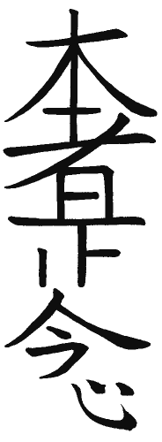
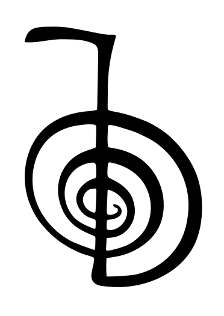
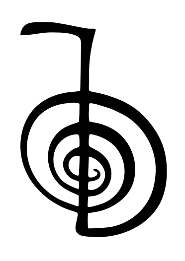
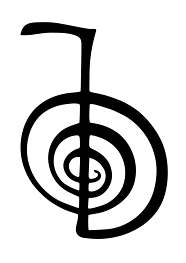

El reiki es una técnica de canalización y transmisión de energía vital a través de la imposición de manos. Su origen se encuentra en la práctica espiritual japonesa y se utiliza para obtener paz y equilibrio en todos los niveles: físico, emocional y espiritual.
La palabra Reiki es una palabra compuesta por dos términos japoneses: Rei: que puede traducirse como "espiritual" o "alma" y Ki: que significa "energía vital".

 


Los practicantes de Reiki creen que la energía vital fluye a través de ellos y se transmite a la persona que recibe el tratamiento para equilibrar y armonizar su energía y así promover la curación y el bienestar.